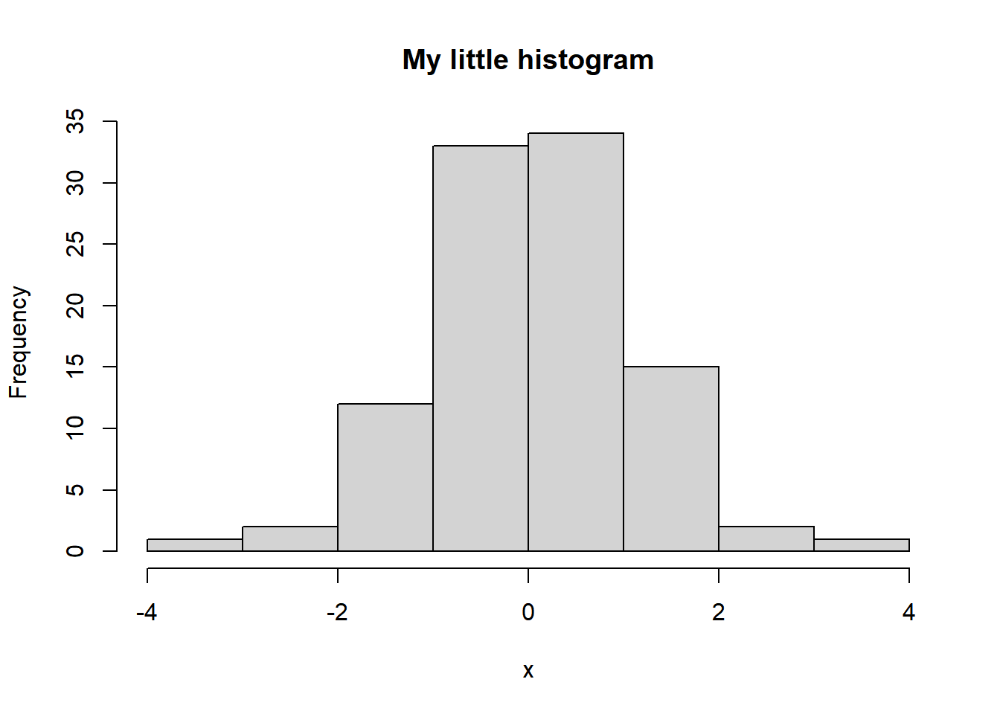
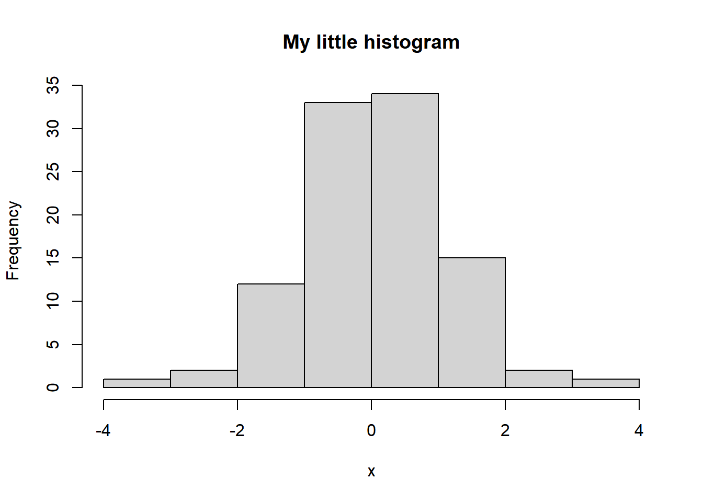

n = 100
x = rnorm(n)
hist(x, main = "My little histogram")
a simple example report
This is an example of report from a Quarto document (with file format .qmd ). You can look at the html or pdf version of the document to spot things you like to learn how to do in Quarto and then go to the corresponding place in the .qmd file to see how I did it.
The Quarto website is very helpful for learning about Quarto. You can search (upper right corner) for specific things that you want to do in Quarto. Try for example searching for bold to see how you get bold text.
At the top of the file is the so called YAML, which contains the settings of the document.
Quarto documents uses a special language called markdown to write formatted (pretty looking) text like bold text or italic text.
You can make lists
Or numbered lists
Or even lists like this:
You can use footnotes. 1
Links to webpages: markdown cheat sheet
Horizontal lines to be break up paragraphs
and who doesn’t like a little wise quote?
You can also use titles of section of different sizes:
| Name | Title | Parking space |
|---|---|---|
| Mike | PhD student | No |
| Sarah | Professor | Yes |
| Deborah | Lecturer | No |
A Quarto document can mix text and computer code. You can include code that computes statistics in your documents and then have the computed statistics analyzed or plotted in the same document.
Code is written in code chunks. Here is chunk of R code that produces a plot in @littlehist
n = 100
x = rnorm(n)
hist(x, main = "My little histogram")
plot(cars)
For example, see @littlehist.
Variables like n defined in a previous chunk can be used in a new chunk, like this:
mean(x) # note how I use x from the previous code chunk[1] -0.02178683By the way, note how I used backticks ` ` on n above to make the font look like computer code. So I can write plot( x ~ y, data = mydata) to show you the plot command in the text.
You can also include other images than plots produced by R. Like this:
 see @larry for grumpy dude.
see @larry for grumpy dude.
Quarto can be used to write beautiful mathematical symbols using a very powerful typesetting system for maths called LaTeX (Strange name. Watch out, weird stuff may pop up when searching for help about LaTeX commands …). Here is some formulas that you will learn about during this course:
\[ y = \beta_0 + \beta_1 x + \varepsilon, \text{ and } \varepsilon \sim N(0,\sigma^2_{\varepsilon}) \]
You can also write LaTeX math directly in the text: \(y=a\cdot b^x\) and then just continue with the text.
This is the footnote.↩︎